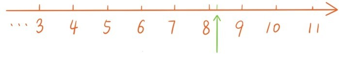
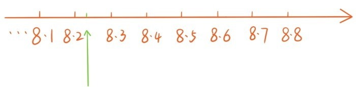
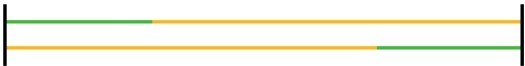

——数与长度之间的对应
在第八节中，我们将所有有理数都安置在了数轴上，每个有理数都对应着数轴上的点。那么反过来，会有个自然的问题：
问题23：是不是数轴上每个点都对应着一个有理数？
这一节的内容——数与长度之间的对应将告诉我们数轴上除了有理数点外，还有大量的其他点。
首先要做的，就是让数轴上处在原点右边的点与小数对应。先任意给定这样一个点，用绿色箭头标出，称为绿点。

这个绿点所对应的数要么是自然数（这种情况就不必再考虑了），要么介于两个相邻的自然数之间，比如8与9之间。那么这个点对应的小数的个位数就是8。接下来将介于8与9之间的线段10等分，则等分点分别对应小数8.1，8.2，…，8.9。这个绿点要么是等分点（这种情况对应的数为有限小数，不必再考虑了），要么介于两个相邻的等分点之间，比如8.2与8.3之间，那么这个绿点对应的小数的十分位数就是2。

接下来再将介于8.2与8.3之间的线段10等分，则等分点分别对应小数8.21，8.22，…，8.29。这个绿点要么是等分点（这种情况对应的数为有限小数，不必再考虑了），要么介于两个相邻的等分点之间，比如8.24与8.25之间，那么这个绿点对应的小数的百分位数就是4。接下来再将介于8.24与8.25之间的线段10等分……
按照这种方法一直做下去，这个点要么对应一个有限小数，要么对应着一个无限小数8.24…，反过来，每个小数也都对应着原点右边的一个点。因此，数轴就像一把抽象的尺子，上面刻满了各种有限小数和无限小数，任何长度都可以用这把抽象尺子精确测量。
为了让数轴上原点左边的每个点也对应一个数，我们引入小数的相反数，例如3.2760351…的相反数是-3.2760351…，两个数对应的点关于原点是对称的。将有限小数，无限小数及其相反数统称为实数，这样所有的实数和数轴上的所有点就有了完整的一一对应。和有理数类似，可以定义正实数，负实数，正负号，实数绝对值，等等。
那么，该如何定义实数的加减乘除运算呢？
之前讲过，让所有有理数都加上同一个有理数，可以看成是数轴的左右平移；让所有有理数都乘以一个正数，可以看成是数轴的伸缩；让所有有理数都乘以-1可以看成是整条数轴旋转了180°。
现在实数和数轴上的点已经可以完整地对应了。这就启发我们将加上一个实数定义为整条数轴的平移，比如加上3.2760351…就是将整条数轴右移3.2760351…，加上-4.5267923…就是将整条数轴左移4.5267923…。至于减法，还是和以前一样，定义为加上相反数。
如何验证加法交换律和结合律呢？任意给两个实数，比如6.41…和-8.27…加上这两个数对应着数轴的两种平移。如果对数轴先做第一种平移，再做第二种平移，原点移到了点6.41…+(-8.27…)。如果对数轴先做第二种平移，再做第一种平移，原点移到了点-8.27…+6.41…。但是注意到，不论先做哪个平移，最终的效果都是一样的。所以
把这两个数换成其他实数等式照旧成立，所以交换律总是成立的。
如何验证结合律呢？比如如何说明等式
注意加上2.65…和加上-5.24…分别代表两种平移，等式左边表示对点-0.91…先做第二种平移，再做第一种平移后的位置，等式右边表示先做第一种平移，再做第二种平移后的位置。因为两次平移的先后顺序不改变最终的效果，所以等式成立。在这里，可能有读者会问：
问题24：对数轴做两次平移时，为什么两次平移的先后顺序不改变最终的效果？
这确实是个问题，希望下图能启发读者自己回答这个问题，其中同色的线段长度相等。

实数乘法更加棘手。似乎可以将所有实数都乘以一个正实数，定义为整条数轴保持原点不动的均匀伸缩，比如乘以2.14…就是保持原点不动，让整条数轴均匀伸长，使得1伸长到2.14…的位置。将所有实数乘以-1定义为整条数轴旋转了180°，而所有实数乘以负实数就是定义为旋转加伸缩。还可以定义倒数，比如保持原点不动，让整条数轴均匀伸长，使得1伸长到2.14…的位置时，一定有唯一一个点伸长到了1的位置，我们就将2.14…的倒数定义为这个点所对应的实数，而除以一个实数可以定义为乘以它的倒数…
如此定义出实数乘除法之后，该如何解释乘法交换律和乘法结合律总是成立的呢？和解释加法交换律和加法结合律类似，我们需要说明对数轴做两次保持原点不动的均匀伸缩变换时，两次伸缩的先后顺序不改变最终的变换效果。但是这里又会有人问：
问题25：对数轴做两次保持原点不动的均匀伸缩变换时，为什么两次伸缩的先后顺序不改变最终的变换效果？
这个问题比两次平移的问题更难回答。即使回答了这些问题，又该如何说明分配律总是成立的呢？
诸如“平移”“伸缩”这样的词代表的是一种更接近现实，更物理化的名词，相比较之下加减乘除运算更接近数学本质。用“平移”“伸缩”这样的词来定义加减乘除运算，即使能自圆其说，也难免给人一种本末倒置的感觉。
实数可以与数轴上的点建立完整的一一对应关系，实数的加减乘除运算与数轴的平移、伸缩、旋转也应该直接挂钩。考虑到实数有如此美好的性质，如果能让数的家园扩充为实数自然是极好之事。但是在为实数做身份验证的时候，却碰到了如此之多的质疑。这迫使我们不得不严肃地提出：
问题26：如何严格定义实数的加减乘除运算，如何验证实数运算满足五大运算定律？
这个问题的完整回答已经超出了初等数学的范围。不过，仍然可以给出一个很初步的说明。
请注意到一个非常重要的现象：引入分数作为自然数的扩充时，分数的加减乘除运算也是作为自然数的加减乘除运算的扩展，而自然数运算满足五大运算定律又可以推出分数运算满足五大运算定律。同样地，引入有理数及其运算，也是作为分数及其运算的扩展，是在分数运算满足五大运算定律的基础上说明有理数运算满足五大运算定律。因此，从自然数及其运算，到分数及其运算再到有理数及其运算，这是一脉相承的。现在，为了定义实数运算，验证五大运算定律，我们把有理数的加减乘除运算满足五大运算定律作为出发点。
其实每个实数都可以看成是一串有理数的无限逼近，例如
-3.2749351…可以看成是-3，-3.2，-3.27，-3.274，-3.2749，-3.27493…这一串有理数的无限逼近。至于实数的加减乘除运算，就可以定义为有理数运算的无限逼近，例如，-3.2749351…+5.23908736…就可以看成是-3+5，-3.2+5.2，-3.27+5.23，-3.274+5.239，-3.2749+5.2390，-3.27493+5.23908…的无限逼近。这时从有理数加减乘除运算满足五大运算定律就可以推出实数加减乘除运算也满足五大运算定律。
当然了，完整地回答问题26需要严格的实数理论，这属于高等数学的范围，需要较长的篇幅，上面仅仅是初步的说明，希望能让读者相信，在实数上确实可以严格地定义加减乘除运算，而且与有理数一样，所有实数也满足下面这5条基本性质：
（1）实数中有两个特殊的数，0与1，有两个基本运算：加法与乘法，两个实数相加或相乘还是实数；
（2）实数的加法与乘法满足五大运算定律；
（3）每个实数和0相加都不会变，每个实数和1相乘也都不会变；
（4）每个实数都存在相反数，相反数也是实数，实数和它的相反数相加等于0；
（5）每个非零实数都存在倒数，倒数也是实数，非零实数和它的倒数相乘等于1。
所以，所有实数及其运算也构成一个算术系统，称为实数算术系统，这是一个比有理数算术系统更大的算术系统。我们将不是有理数的实数，即无限不循环小数，称为无理数。
提问时间
1.12.1 请问一个有理数加上一个无理数，结果是有理数还是无理数？一个无理数加上一个无理数呢？
1.12.2 请问一个有理数乘以一个无理数，结果是有理数还是无理数？一个无理数乘以一个无理数呢？
1.12.3 对数轴先作一次平移变换再作一次伸缩变换，和先作伸缩变换再作平移变换，最终的效果是一样的吗？（提示，利用加法乘法分配律。如果说加法交换律、加法结合律的实质是数轴两次平移变换的可交换性，乘法交换律、乘法结合律的实质是保持原点不动的两次伸缩变换的可交换性，那么加法乘法分配律的实质就是平移变换和伸缩变换的不可交换性）